Different problems need different levels of design.
Some projects need a full product rethink. Others need a focused redesign, a clearer flow or one reusable pattern. This is the work in one place, separated by depth rather than hidden across different pages.
Designing for complexity, scale and change.
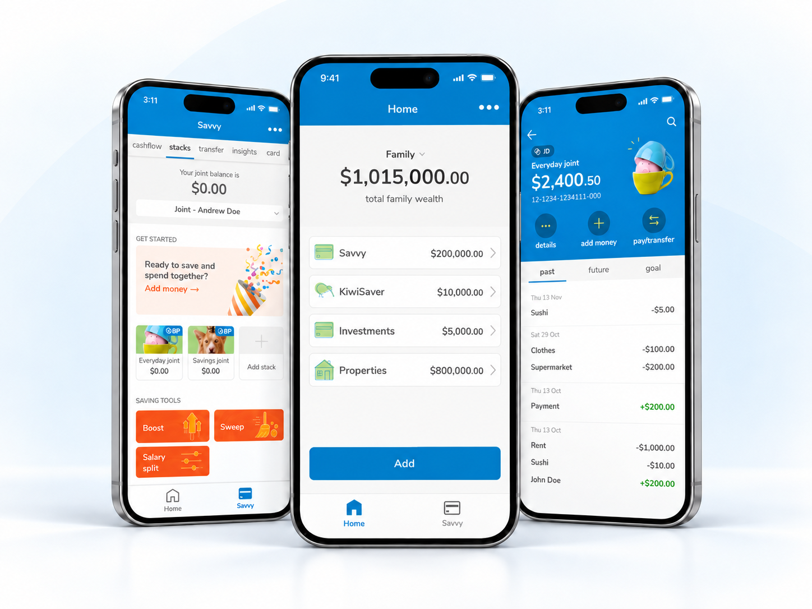
Savvy — Designing relationships that scale
Joint accounts exposed a bigger relationship problem. The solution became a model for more than one feature.
Read case study →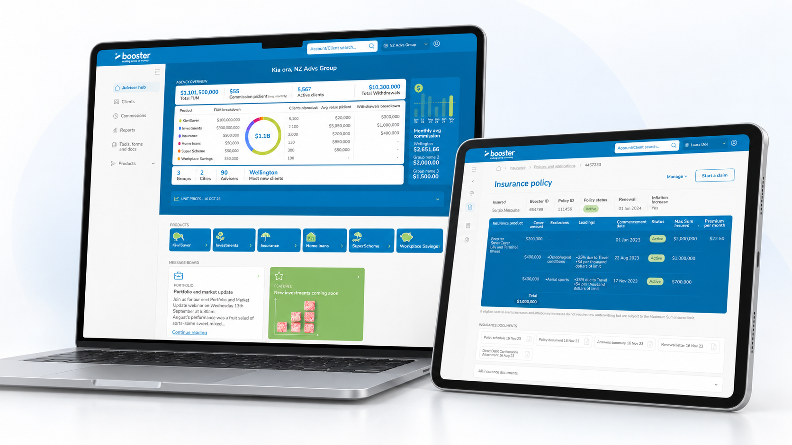
Adviser Hub — Modernising a 1997 investment platform
The first design task was reconstructing how the existing system worked and what people still depended on.
Read case study →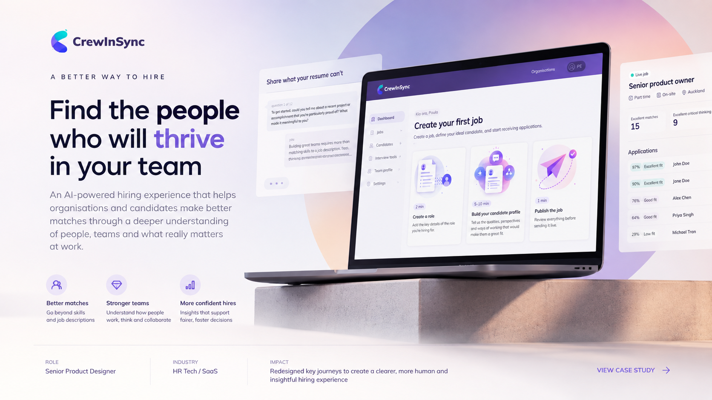
CrewInSync — Redesigning a startup product in 50 hours
A deliberately constrained redesign focused on where design effort would create the most leverage.
Read case study →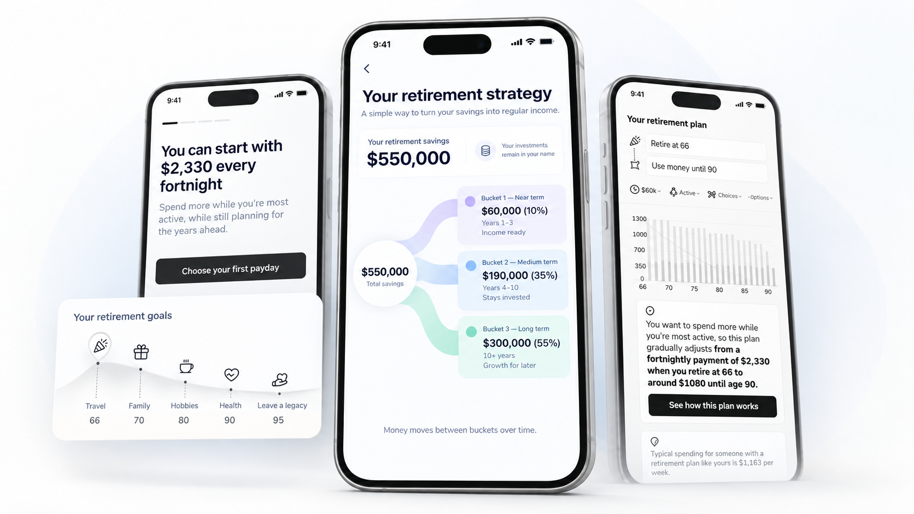
Drawdown — Designing what happens after KiwiSaver
Research reframed the problem from “build a calculator” to “support retirement as an ongoing experience.”
Read case study →Focused problems. Useful outcomes.
KiwiSaver hardship withdrawal
A guided withdrawal journey where answers determine the evidence and documents a member needs to provide. I treated the application as a rules engine rather than a long form. The external legal provider later built the production solution using several references, including mine; I don’t know how much of my work directly informed their final implementation.
PDS access consistency
A small-looking requirement that touched around ten flows across web and app. I worked with legal stakeholders to create one reusable pattern for finding and downloading Product Disclosure Statements across multiple contexts.
KiwiSaver active-choice onboarding
A fund-selection journey for members who had been assigned to Booster by default, designed to turn a passive default into a more informed choice. The UI is older than my current visual approach, but the journey has remained effective over time and received external recognition.
Booster ecosystem
Reusable email templates and website structures designed to reduce repeated work while keeping very different products recognisably part of Booster. Sometimes the most scalable design is the least visually ambitious one.
Earlier work.
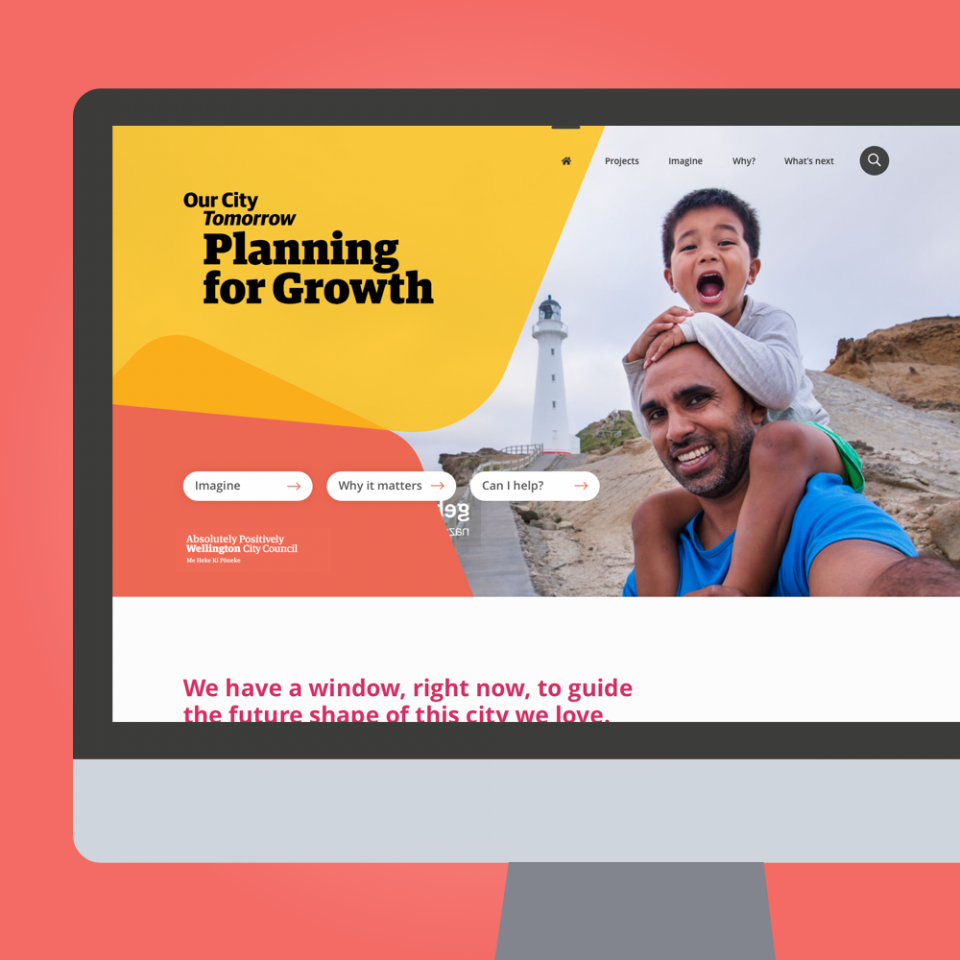
Wellington City Council — Our City Tomorrow
Designed a digital engagement experience to help residents participate in long-term urban planning, with a focus on clear language, trust and accessible participation.
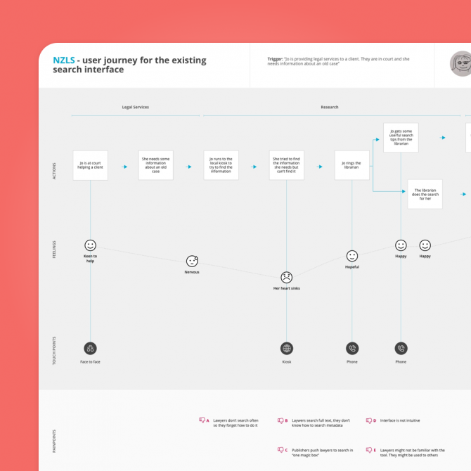
NZ Law Society — Internal Search
Worked on stakeholder alignment, user journeys, evaluation of the existing search and wireframes for a clearer internal search experience.
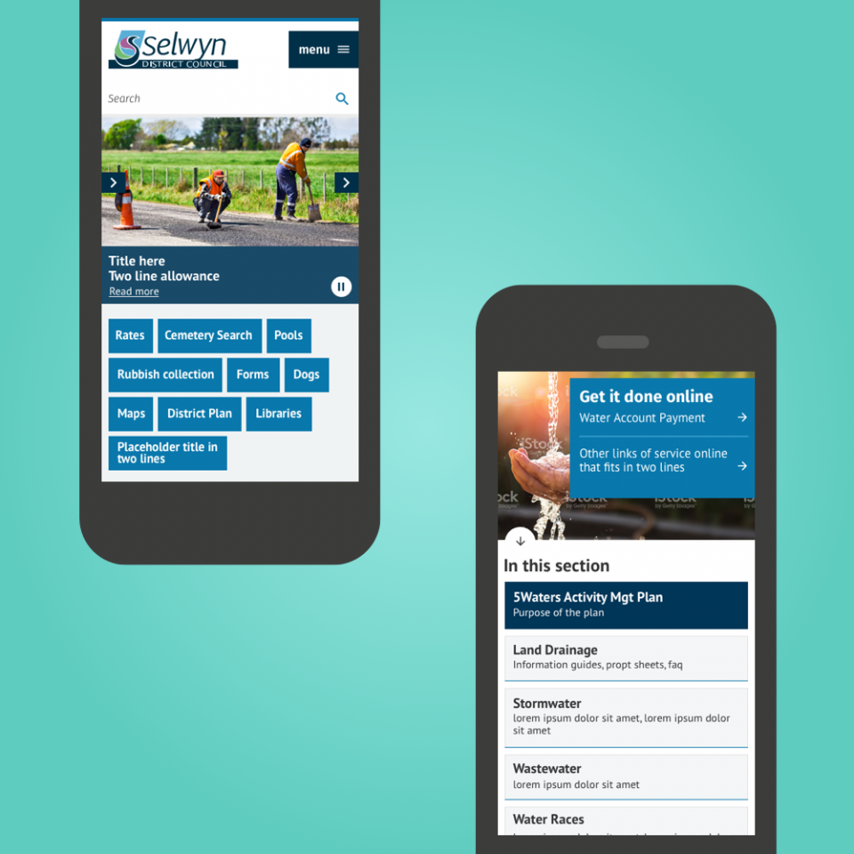
Selwyn District Council
Redesigned council, library and events-centre experiences, including information architecture, workshops, testing and responsive visual design.
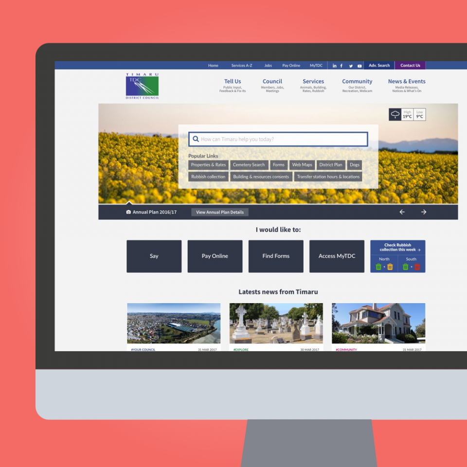
Timaru District Council
Redesigned the homepage around usage patterns, making search and essential resident tasks more prominent.
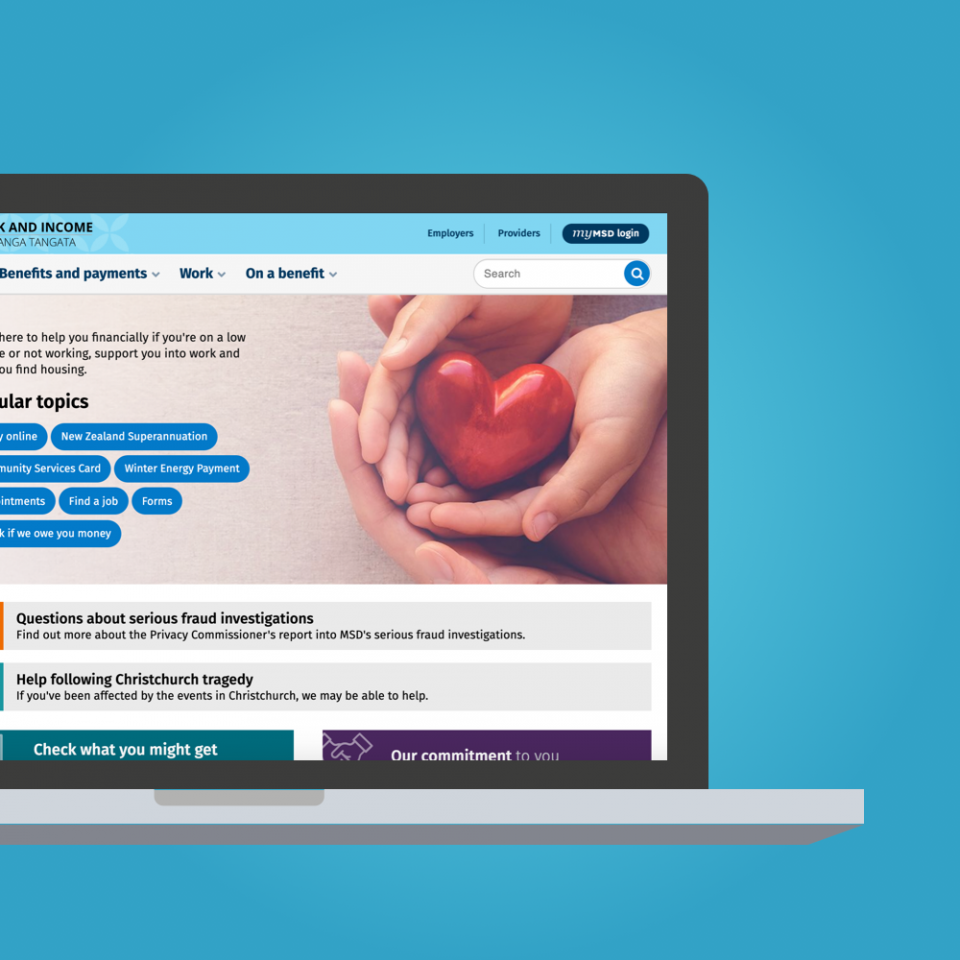
Work and Income — Ministry of Social Development
Worked on navigation, access to high-demand information and clearer visibility of important updates across the website.
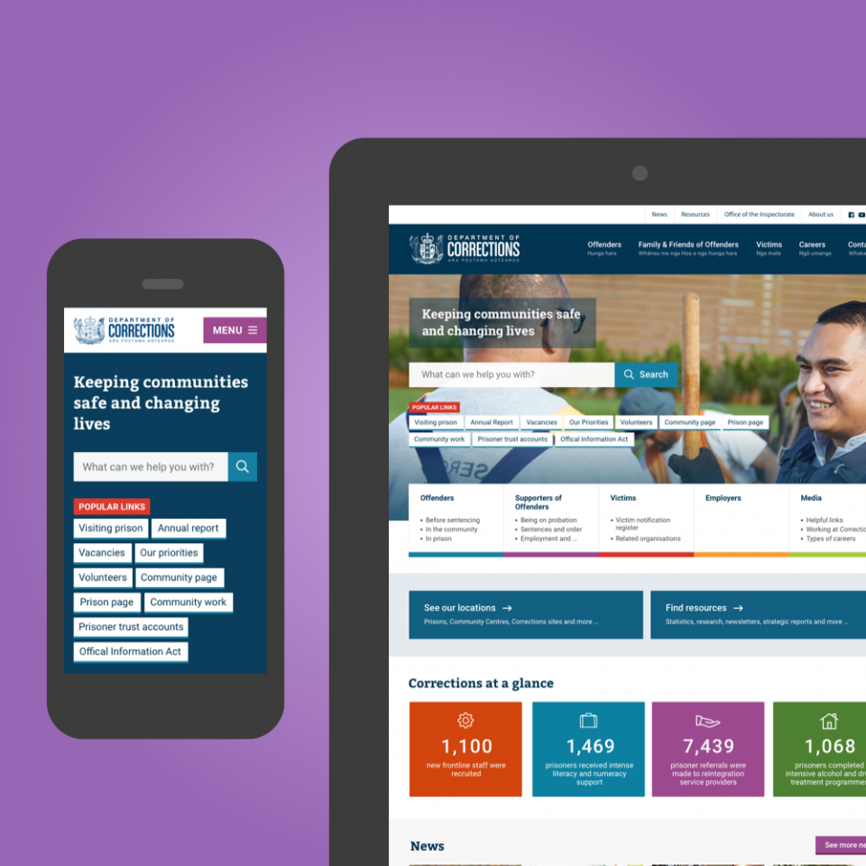
Department of Corrections
Co-designed a new public website through workshops, analytics, wireframes, visual design and early design-system planning.
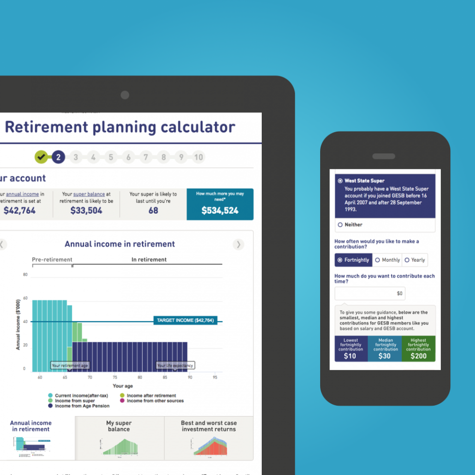
GESB — Contributions Calculator
Designed a retirement calculator interface that needed to work for members with very different levels of financial confidence.
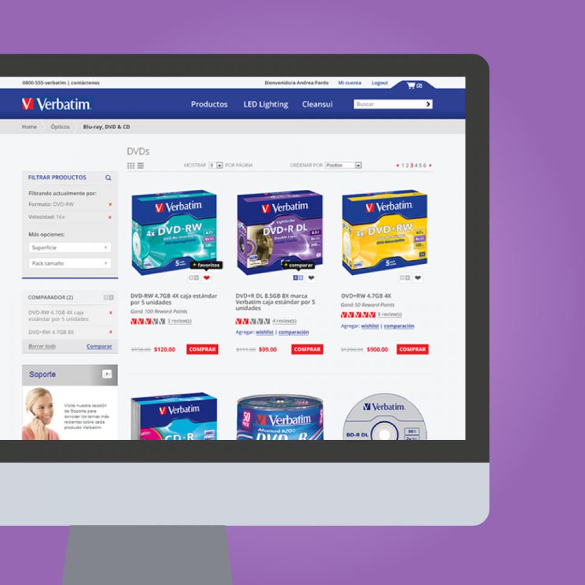
Verbatim Argentina — Ecommerce
Designed an ecommerce experience that translated global brand guidelines into a more modern online retail experience.